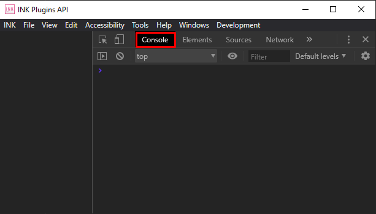
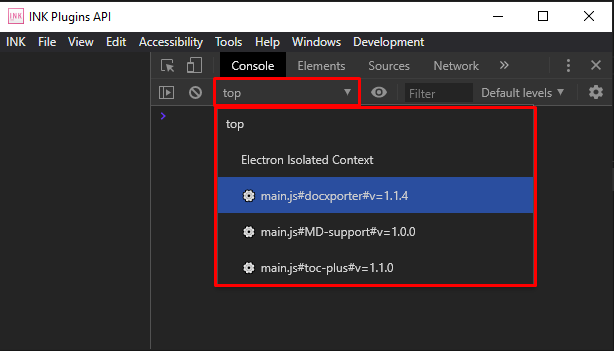
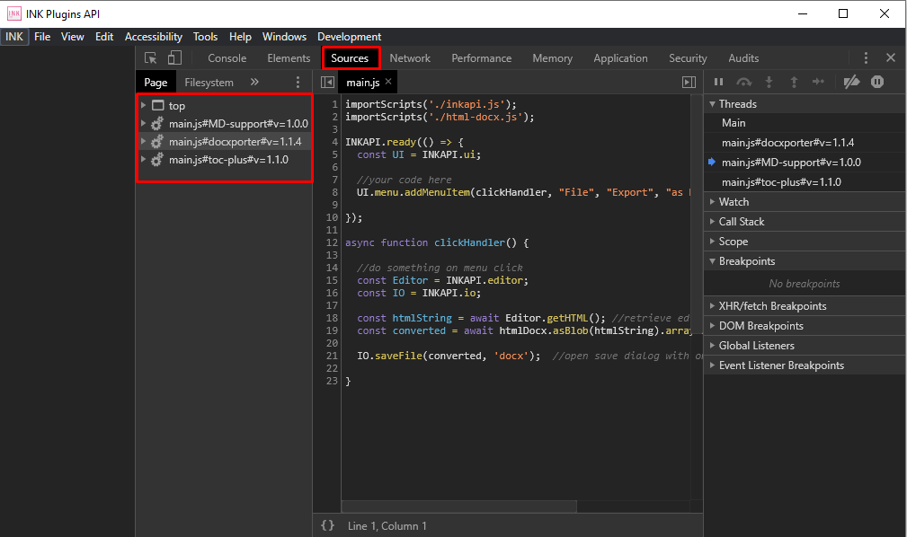

Debug Window¶
Debug Window is helpful for reading console logs from your plugin or to debug the plugin errors. To enable and display the debug window, you will have to launch the INK Application from terminal with some flags as follow:
For Mac Users:
> open <PATH TO INK.app> --args --debug-plugins
for eg.
> open /Applications/INK.app --args --debug-plugins
For Windows Users:
> <PATH TO INK.exe> --debug-plugins
for eg.
> "C:\Program Files (x86)\INK\INK.exe" --debug-plugins
For Linux Users:
> <Path to INK Executable> --debug-plugins
for eg.
> ./INK.AppImage --debug-plugins
Warning
Do not close the Debug Window directly, instead exit the INK application and reopen normally. Closing the Debug Window will terminate all the plugin workers and all the plugin operations will shutdown.
How To Use¶
In debug window there are multiple functionalities available to debug your plugin. You can navigate through them using tabs on the top bar of Devtools.
Console Tab¶
Following is a console tab in Debug Window Devtools
Console tab is useful for reading logs from your plugin. You can also run JavaScript commands directly in the console tab.
Each plugin in INK Editor runs in its own context and to run a command in your plugin context or to access INK APIs directly in console. You will need to switch the JavaScript Context from the dropdown below.
All the plugins contexts are listed here. To find the correct context of your plugin, check the name of plugin after first hash # symbol.
Source Tab¶
You can find your plugin source files in Source tab of Debug Window. Here you can control and debug the program flow by implementing breakpoints and analyze program execution step by step.
